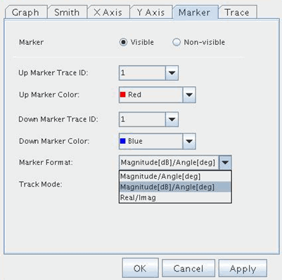
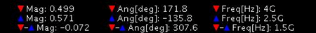

Reflection Coefficient representation
Reflection coefficient is a complex value and is represented in magnitude-angle format by default. However, it is possible to switch to other representation formats. In the Marker tab of the Format dialog box there is Marker Format property. You can choose among "magnitude-angle[deg]", "magnitude[dB]-angle[deg]" and "real-imaginary" as shown below.
The reflection coefficient is always frequency dependent. When the marker is set to visible, the values of the reflection coefficient are displayed at the bottom of the graph, the associated frequency as the 3rd dimension is also shown.

The reflection coefficient is always frequency dependent. When the marker is set to visible, the values of the reflection coefficient are displayed at the bottom of the graph and the associated frequency as the 3rd dimension is also shown.

Functional changes
- Introduced in SmarTest 7.0.3